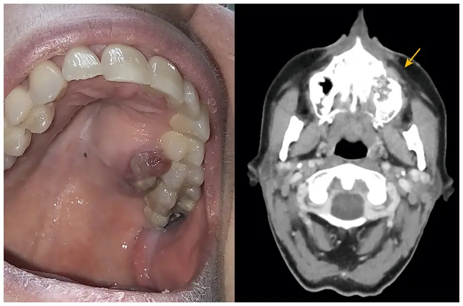

نسخه استخراجشده؛ ترجمه یا تأیید علمی انجام نشده است. وضعیت: captured
خانم ۶۰ سالهای با صورت پفکرده، صدای خشن و پوست خشک برای کشیدن دندان آمده. میگوید همیشه سردش است، خوابآلود است و وزن اضافه کرده، ولی هیچوقت آزمایش تیروئید نداده. قرار بود با آرامبخش خوراکی کار کنی. چرا باید دست نگه داری؟
در کمکاری تیروئید T4 و T3 کم است و بدن کند کار میکند. شایعترین علتش هاشیموتو است، بیماری خودایمنی تیروئید. برداشتن تیروئید و ید رادیواکتیو هم کمکاری میدهند.
در آزمایش، TSH بالا و T4 پایین است. درمان، لووتیروکسین خوراکی است.
در دهان: بزرگسال ممکن است زبان بزرگ و بزاق کم داشته باشد. کمکاری مادرزادی لب ضخیم، زبان بزرگ، رویش دیرهنگام دندانها و مالاکلوژن میدهد.
سرطان تیروئید شایعترین سرطان غدد درونریز است. نوع پاپیلاری بیشترین سهم را دارد و پیشآگهیاش عالی است؛ بقای پنجسالهی کلی سرطان تیروئید حدود ۹۷٪ است. نوع آناپلاستیک نادر و بسیار بدخیم است.

درمان سرطان تیروئید جراحی، ید رادیواکتیو (I-131)، پرتودرمانی خارجی و داروهای هدفمند است. غدد بزاقی ید را جذب میکنند؛ پس بیماری که ید رادیواکتیو گرفته در خطر سیالادنیت مزمن، کمکاری غدد بزاقی، خشکی دهان و پوسیدگی بیشتر است. این تنها عارضهی درمانی است که مخصوص سرطان تیروئید است.
برای این بیمار برنامهی پیشگیری از پوسیدگی بچین: فلوراید، فراخوانهای نزدیکتر و درمان خشکی دهان. سیالادنیت مزمن دردناک ممکن است با سیالواندوسکوپی و شستوشوی مجرا بهتر شود.